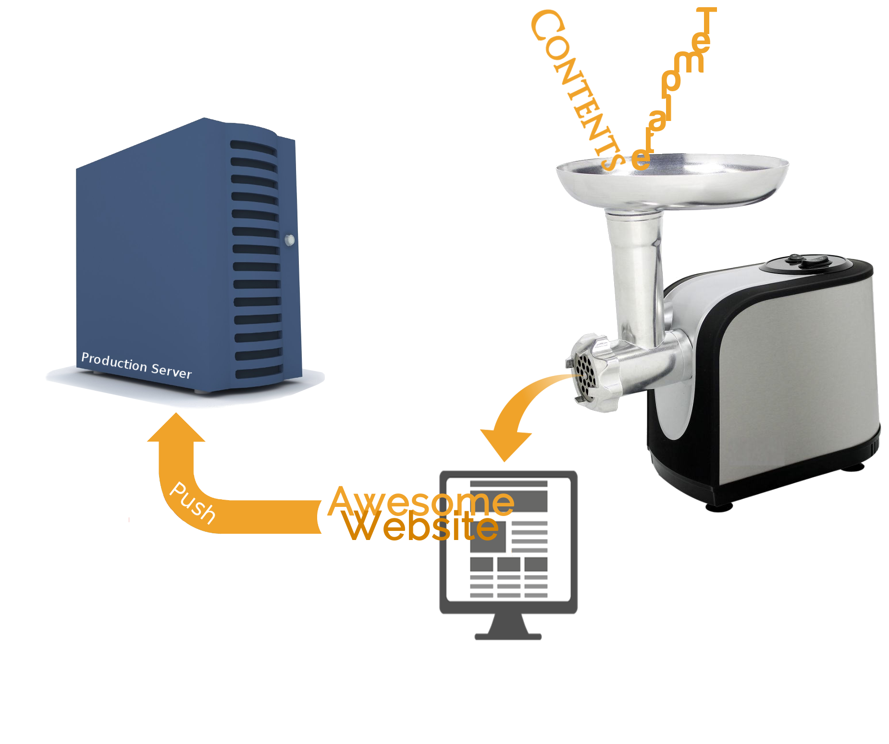

مورد عجیب بنجامین باتن
سایتهای استاتیک
همراه با معرفی هیوگو(با دکمه Spacebar در برگهها جلو بروید)
رفع ادعا:
توسعهدهنده وب نیستم
-->نمایش ویدیو<--
پیوند ویدیو: http://uploadkon.ir/fl/dd/85186
آنچه در این ارائه بحث خواهد شد
درباره سایتهای ایستا (گذشته vs امروز)
درباره سایتسازهای ایستا
درباره Hugo
سایتمان را در کجا میزبانی کنیم
تهیه دامنه و اتصال آن به رپوی گیتهاب
آن روزها
این روزها
روند انتشار محتوا توسط سایتسازهای ایستا
روند انتشار محتوا در CMSها
چرا CMS نه؟!
- منابع سیستم را میخورد: کوئری روی کل پایگاه داده کوئری به ازای هر درخواست، ...
- کاربر محتوای استاتیک دریافت میکند، پس چرا یک سیستم داینامیک؟!
- مشکلات امنیتی: همه میدانیم که چقدر در این زمینه مستعد هستند!
- دانشدن: مشکلات حین بهروزرسانی، کم آمدن منابع سیستمی، خطای پایگاه داده و...
چرا ایستا؟
دردسرهای امنیتی و زحمت نگهداری کمتر: نه پایگاه داده ای، نه بروزرسانی و...
کاربر همانی را میگیرد که روی سرور است: ثانیههایی برای تولید برگهٔ وب درخواست شده تلف نمیشود
مصرف منابع کمتر: فقط به یک وبسرور نیاز دارید
هزینه پایین: حتی رایگان (:
هاها، آفلان بلاگینگ: پستهای وبلاگتان را در ویرایشگر متن مورد پسندتان بنویسید.
چه چیزی نیست
سایت ایستا != محتوای ایستاچه چیزی هست
سایت ایستا == ساختمان ایستاکمبودهای یک سایت ایستا
- نداشتن سامانه ارسال دیدگاه درونی
- نداشتن امکان فرمسازی درونی: برگه تماس با ما، فرم نظرسنجی و...
- کم بودن پوسته های آماده
- نبود رابط گرافیکی
اگر برای وبلاگمان کامنت بخواهیم؟
- دیسکاس / Muut / و...
- انجمنسازها مانند: Discourse / nodeBB / Vanilla که با پلاگینهایشان میتوانند به عنوان سیستم کامنتگذاری استفاده شوند
سایتسازهای موجود
معیارهای انتخاب
- سریع باشد: چون با نوشتن هر پست، باید کل سایت دوباره ساخته شود
- ویژگیهای معمول را داشته باشد: سرور توسعه، سینتکس-هایلایتینگ و...
- مستقل از پلتفرم باشد: ویندوز، لینوکس، مک و...
- کاربر را مجبور به یادگیری زبان برنامهنویسی نکند
- دستکم از یکی از زبانهای مارکآپ متننویسی را پشتیبانی کند، مثلا Markdown
- نرمافزار آزاد باشد
- حول آن جامعهکاربری شکل گرفته باشد: انجمن پشتیبانی آنلاین و...
- مستندات خوبی داشته باشد
سایتساز ایستا چگونه کار میکند؟
- پستها و فایلهای اشاره شده در پستها را جمع میکند
- کانورترهای متن و پوسته را فرا میخواند
- ستها را به HTML برگردانده و در پوسته جا میدهد
- خروجی ایستا (HTML+CSS+JS) را تحویل میدهد.
استفاده ازش ساده است... باور نمیکنید؟!
چطور استفاده کنید؟
- شما فقط پست را مینویسید. همین!
Markdown عالیه!
سازندگان: J. Gruber و A. Awartz
وظیفه: کانورتر Text به HTML
- خوانایی بالای کد
- سادگی نوشتن
- و در ویرایشگر دلخواهتان
چند قاعده نگارشی مارکداون

تست تبدیل Markdown به HTML
❭ echo -e "#Hello World \n\n_Hello World_" > test.md❭ markdown test.md > test.html
❭ xdg-open $_ #It opens the created test.md file
❭ xdg-open test.html #It opens converted test.html file
خارج از موضوع:
pandoc
متنهای نوشته شده با Markdown را به فرمتهای دیگر مانند pdf، odt، tex و... تبدیل میکند.
❭ pandoc test.md -o test.odtویژگیهای هیوگو
- سریعه: در حد میلیثانیه کارش رو انجام میده
- انعطافپذیره: مناسب برای ساخت بلاگ، ویکی، پورتفولیو و...
- ویژگیهای معمول رو داره: tags، categories، RSS feeds، archives و...
- پوستههای آماده: gohugo.io/themes | که البته برای فارسی باید rtl شوند
- پشیتبانی از: Markdown، reStructuredText، Wiki، BBCode، Textile و HTML
- سرور پیشنمایش: امکان میدهد ویرایشهایتان را بهصورت زنده ببینید
- پشتبانی پیشفرض از سینتکس هایلایتینگ
- پشتبانی پیشفرض و توکار از سامانه کامنتگذاری Disqus
از اینجا شروع کنیم
❭ sudo apt install hugo # Ubuntu 16.04
❭ pacaur -S hugo # (-Syu), Archlinux
❭ hugo help
❭ hugo help new
بیایید یک سایت نمونه بسازیم
# ساخت اسکلت سایت ❭ hugo new site my-test❭ cd $_; ls -1F
- archetypes/ - config.toml - content/ - data/ - layouts/ - static/
❭ mv -f themes/hugo-phlat-theme-rtl/exampleSite-rtl/* .
❭ rm -r themes/hugo-phlat-theme-rtl/.git
# پروندهٔ 'config.toml' را متناسب با داده های خود تنظیم کنید.
Let's build/serve it
❭ hugo دستور بالا سایت استاتیک را تولید و در یک پوشه جدید قرار می دهد ❭ ls archetypes config.toml contentdata layouts public static
❭ hugo server Available at http://localhost:1313
❭ hugo --bind "0.0.0.0" --port 4321
❭ hugo server --theme=X --buildDrafts --buildFuture
موتور مولد پوسته
- تابع افزودن: {{ add 1 2 }}
- جانگهدار محتوا: {{ content }}
- تعریف یک متغیر: {{ $addr := "Azadi Squre"}} و استفاده به صورت {{ $addr }}
میزبانی رایگان سایتتان در
Github | Gitlab | Aerobatic (via Bitbucket) | Surge.sh | Dropbox | Amazon S3 | Anywhere that can serve static pages!
میزبانی روی 'Github Pages'
در گیتهاب پروندههای HTML درون دو نوع رپو سرو میشوند:
- هر برنچ با نام gh-pages
- رپویی با نام user.github.io
CNAME file
آماده استفاده از git
برای میزبانی سایت در گیتهاب❭ sudo dnf install git #Fedora
❭ sudo pacman -S git # (-Syu), Archlinux
# config git ❭ git config --global user.name "USERNAME"
❭ git config --global user.email "EMAIL" ❭ git config --global core.excludesfile /path/to/gitignore_global
❭ git config --global core.editor <preferred editor, such as: nano, vim, etc>
❭ git remote add origin git@github.com:user/repo.git
❭ git submodule add git@github.com:user/theme.git themes/theme
# Instead of mkdir -p themes
# If you clone, remove its .git directory
❭ mv themes/theme/config.toml .
# Edit 'config.toml'
❭ git commit -m 'INIT'
❭ git push origin master -u
Deploy by 'git subtree' to github
Deploy by Wercker.com
New to CI?
هر زمان که کامیتی را روی مخزن بفرستید، کد داخل رپو توسط ورکر ساخته میشود.
- ورکر یک سرویس CI عالی است که از داکر به عنوان محیط ساختش استقاده میکند
Deploy by:
github.com/X1011/git-directory-deploy
#Push to a gh-pages branch ❭ hugo -d dist❭ ./deploy.sh
❭ rm -rf dist/
POSTs
❭ hugo new post/title-for-post.mdEach posts starts with a block of TOML/YAML/JSON front matter
+++
date = "2016-05-19T17:40:53+04:30"
description = "DESCRIPTION"
tags = ["TAG1", "TAG2"]
title = "THIS IS A TITLE"
+++
Post file name structure: YYYY-MM-DD-TITLE.md
Domain Provider: nic.ir
و نمایندگان فروش: bertina، hostiran و...